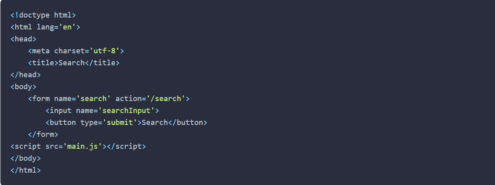

Notes For Week 4
WDD 330 Mandy Chadwick
Chapter 8 JavaScript Novice to Ninja Notes
Forms are made up of a form tag in brackets
Here is an example of a simple form

Click Here to See the Form:
form
This form has a name attribute of search, and contains two controls: an input field where a user can enter a
search phrase, and a button to submit the form. The form can also be submitted by pressing Enter
Retrieving and Changing Values From a Form
An Example of a More Detailed Form:
Hero Needed Form
Chapter 8 Novice to Ninja Summary
- Forms are the primary method used for entering data into a browser.
- Forms have a variety of controls that are used for entering different types of information.
- HTML5 has a large number of new input types that are beginning to be implemented in modern browsers.
- document.forms will return an HTML collection of all the forms on a page.
- form.elements will return an HTML collection of all the elements contained within a form.
- Forms have focus, blur, and change events that fire as a user interacts with the form.
- Forms also have a submit event that can be used to intercept a form before it’s been submitted.
- The information entered into a form can be read or updated using the value property of the form controls.
- The HTML5 form validation API can be used to automatically validate a form.
Chapter 12 JavaScript Novice to Ninja Notes
Definitions
- Value― This is the value of the property and is undefined by default
- writable ― This boolean value shows whether a property can be changed or not, and is false by default
- enumerable ― this boolean value shows whether a property will show up when the object is displayed
in a for in loop, and is false by default
- configurable ― this boolean value shows whether you can delete a property or change any of its attributes, and is false by default.
- Mixin ― a way of adding properties and methods of some object to another object withou using inheritance.
Chapter 12 Summary
- Object-oriented programming (OOP) is a way of programming that uses objects that encapsulate their own
properties and methods.
- The main concepts of OOP are encapsulation, polymorphism and inheritance.
- Constructor functions can be used to create instances of objects.
- ES6 introduced class declarations that use the class keyword. These can be used in place of constructor
functions.
- Inside a constructor function or class declaration, the keyword this refers to the object returned by the
function.
- All instances of a class or constructor function inherit all the properties and methods of its prototype.
- The prototype is live, so new properties and methods can be added to existing instances.
- The prototype chain is used to find an available method. If an object lacks a method,
JavaScript will check whether its prototype has the method. If not, it will check that function’s
prototype until it finds the method or reaches the Object constructor function.
- Private properties and methods can be created by defining variables using const and defining a function
inside
a constructor function. These can be made public using getter and setter functions.
- Monkey-patching is the process of adding methods to built-in objects by augmenting their prototypes.
This should be done with caution as it can cause unexpected behavior in the way built-in objects work.
- A mixin method can be used to add properties and methods from other objects without creating an inheritance
chain.
- Methods can be chained together and called in sequence if they return a reference to this.
- Polymorphism allows objects to override shared methods with a more specific implementation.
- The value of this is not retained inside nested functions, which can cause errors. This can be worked
around by using that = this, using the bind(this) method and using arrow functions.
- Methods can be borrowed from other objects.
- Composition over inheritance is a design pattern where objects are composed from 'building-block' objects,
rather
than inheriting all their properties and methods from a parent class.
Chapter 15 Notes on Modular Javascript
Definitions
object literal― a comma-separated list of name-value pairs inside of curly braces. Those values can be properties and functions.
Parameter― W3schools definition: The parameters, in a function call, are the function's arguments. JavaScript arguments are passed
by value: The function only gets to know the values, not the argument's locations. If a function changes an argument's value, it does not change the parameter's original value
Prototype― From Educative.com: A JavaScript prototype is used to add new properties and methods to an existing object constructor.
- A module is a self-contained piece of code that provides functions and methods that can then be used in
other files
and by other modules.
- ES6 added support for modules, allowing code to be abstracted into their own self-contained files and
imported
into another file.
Question:
- How is creating objects from other objects used in web development?
- Is what we learned in Chapter 12 used in web backend development?